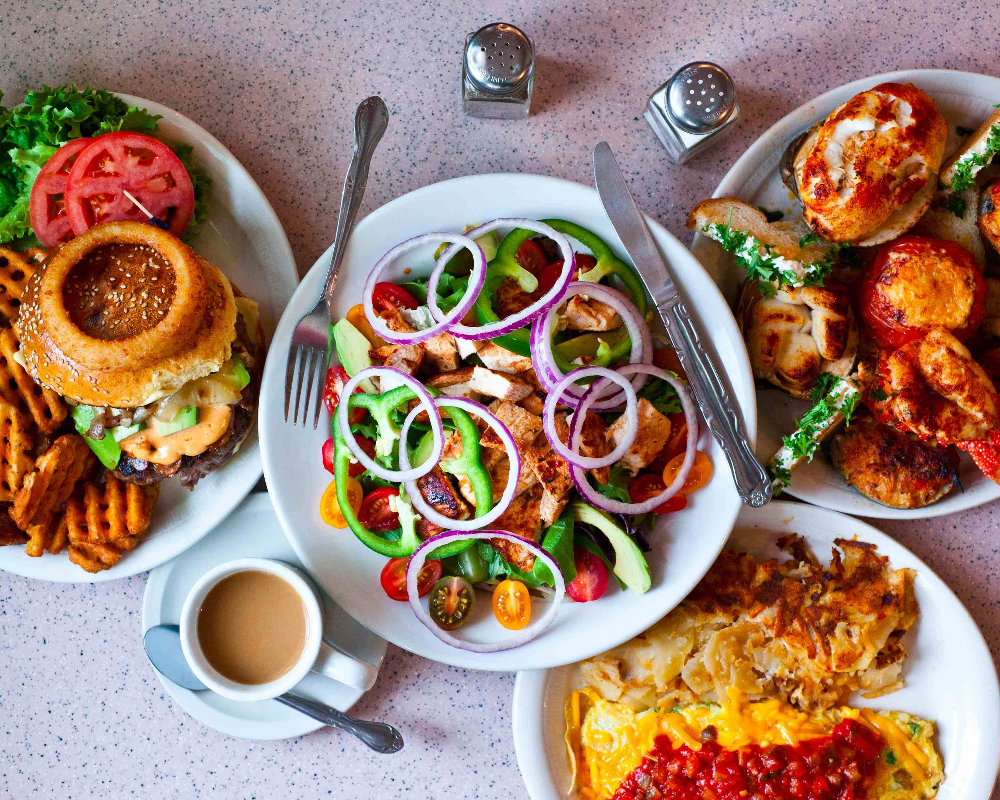
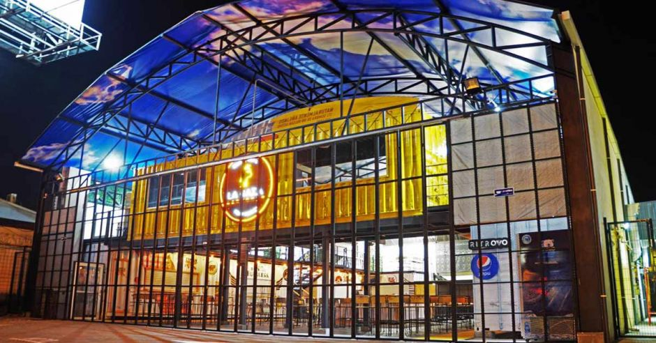

Ubicación del campus
El mapa está centrado en la Universidad Fidélitas.
Restaurantes cerca de Universidad Fidélitas

Soda Moyita
Ver en Google Maps

El mapa está centrado en la Universidad Fidélitas.